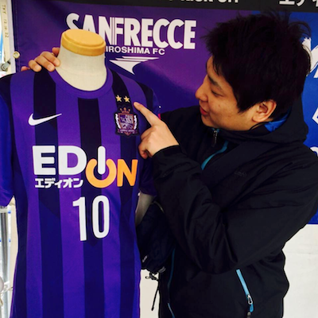

GREE Tech Talk 10回目のテーマは「データ可視化」です。
今回は、データ可視化についてみなさまと一緒に学びを深めたいと思います。
2016年3月24日(木) 開場：19:00、終了：22:00
東京都港区六本木6-10-1 六本木ヒルズ森タワー
グリー株式会社
100
森藤 大地 @muddydixon |
自然言語処理・言語発達のニューラルネットワークなどの研究を行った後、ニフティ株式会社に入社。入社後、Webサービスの開発および運用に従事、レコメンデーションエンジンの設計開発などを行った。2013年以降は、ビッグデータ・IoT関連事業に所属し、全社的なデータ保持・ 解析基盤の構築・データマイニング業務に携わる。IoT分野では、「With Us, You Can」という社是の元、顧客のためにWebのデザインからデバイス、データまでトータルでソリューション提案・実現に携わる。 |
|  上竹 嘉史 |
2013年、グリー株式会社に新卒入社。現在はデータセンターチームにてネットワークの構築・運用に従事。サンフレッチェ広島をこよなく愛するサポーターときどきネットワークエンジニア。 |
尾形 暢俊 @nobu666 |
受託開発の会社からグリー、スタートアップを経てスマートニュースに。主にインフラ寄りの業務に従事する飲酒系エンジニアです。酒とヘヴィメタルと猫に強く反応します。 |
佐々木 海 @Lewuathe |
Software Engineer in Treasure Data. I’m mainly responsible for maintaining and improvement of Hadoop infrastructure in TreasureData. |
反田 光洋 |
2011年1月入社。いくつかのゲームプロダクト開発を経験し、現在インフラチームに所属。インフラではリソースモニタリングを担当。 |
松木 雅幸 @songmu |
大学で中国語と機械翻訳の研究に注力。卒業後中国へ渡り、ITベンチャーの立ち上げに関わる。その後に帰国し、語学学校、印刷系SIerでの業務、カヤックでソーシャルゲーム開発のリードエンジニアなどの経験を経て、2014年にはてなに入社。東京オフィスでチーフエンジニアと、モニタリングSaaSであるMackerelのディレクターを兼務している |
竹内 秀行 @chimerast |
株式会社ユーザベースの何でも屋。E2D3プロジェクトでは、基盤システムの構築を担当。 |